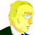

市長 「これはまた、用心深い方ですね」
 ＡＪ 「実際に牢獄を確かめに行く程ではありませんよ」
ＡＪ 「実際に牢獄を確かめに行く程ではありませんよ」
市長 「・・・こちらのリストの３名をＦの９区へ。こちらの８名がＫの１区へ移動。それで問題ありませんね」
ＡＪ 「至急、通達願います。移送完了は本日１８：００までに」
市長 「わかった。これで問題なかろう」
ＡＪ 「結構。今回の強襲によって被る被害額はそちらで見積もり計算して、ここまで請求書を出したまえ。作戦成功の暁には、市長殿への報酬も別途、振り込まれる」
市長 「さすがに、資金も無尽蔵のセグメント評議会という訳ですか・・・。ッ！？ なっ、あ・・・ッ！？」
ＡＪ 「どうやら、市長殿は賢明なご様子ですから、わたしがここへ来た事も、私が誰かも、すっかり忘れてくださるようだ」
市長 「も、勿論です」
ＡＪ 「では、失礼するよ。移送の件はぬかりの無いように」
ナレーション 「独立自治権を勝ち取った宇宙移民者群セツルメントは、ようやく得た平和の中に麻痺し、やがては特権主義社会を生み出し、結局は自らが小セツルメントへの圧政を強いるようになる。時に宇宙世紀２５５年。各地で起きたセツルメント内紛争は、体制側と、反体制側に別れてその共同戦線を張り、セツルメント間による強大な戦禍を巻き起こしつつあった」
タイトル
|
− The Great Escape II − |
ＡＪ 「ここなら繋がるな・・・」
 ザカリア 「ん？ はい、ザカリアです」
ザカリア 「ん？ はい、ザカリアです」
ＡＪ 「ダグラスだ」
ザカリア 「遅いですよ、長官。待ちくたびれてました」
ＡＪ 「まぁ、そう言うな。今日は存分に暴れていい」
ザカリア 「ひゃっほうッ！ 待ってましたよ、その言葉。長旅に潜入と退屈続きだったんだ」
ＡＪ 「刑務所の警備程度じゃ、大した遊びにも並んだろうが、決行は本日１８：００。地図は手に入れてあるな」
ザカリア 「ンなの、とっくに済ませてますよ。落とすブロックは？」
ＡＪ 「まずはセントラル・シティの１４番地市長邸宅。これで警備を誘き出して、収容ブロックへ誘導しろ」
ザカリア 「Ｏｋ．次は？」
ＡＪ 「Ｆの９区だが、こちらはアベルの担当だ。間違うなよ。中にいるのはパーノッド派のＶＩＰだ」
ザカリア 「了解。無事に救出させます」
ＡＪ 「それから、お前はＫの１区だ。わかってると思うが・・・」
ザカリア 「わかってますよ」
 アベル 「多分、これで・・・」
アベル 「多分、これで・・・」
 ケネス 「おっ！？ おおっ！」
ケネス 「おっ！？ おおっ！」
アベル 「いいはずです」
ケネス 「でかした！ 少年！」
アベル 「アベルです」
ケネス 「助かったぜ、アベル。ひょっしてパソコンおたくかなんかか？」
アベル 「違いますよ。・・・ジンさん、このアルファベットは何です？」
ケネス 「ん？ ああ。こりゃ、収容ブロックナンバーだな。どの地区にいるかっ事だ」
アベル 「罪の重さで収容される場所が違うんですか？」
ケネス 「それもあるが、共犯者同士は同じブロックに入らないようにしてあるのさ」
アベル 「えっ？ どうして？ 同じ罪なら、同じ罰じゃないんですか？」
ケネス 「共犯者同士が投獄前みたいに結託して、反乱でも起こしたらオオゴトだからな」
アベル 「あ。なるほど。・・・Ａ地区終わりました。該当者ナシです」
ケネス 「おう。他にも、ボスと子分を引き離したり、馬の合わない連中を離したりくっつけたりする。学校じゃ、双子が同じ教室にならなかったり、教師の子供が親のクラスには振り分けられないのと似たようなモンさ」
アベル 「・・・あれ？」
ケネス 「どうした？」
アベル 「いえ」
アベル （僕の学校って・・・、どんなだったかな）
ケネス 「おッ！？」
アベル 「あっ、見つかりました。Ｅ・ゲイブルズ、Ｂの４地区です」
ケネス 「よぉし、よしよし」
アベル 「この調子なら、すぐ見つかりそうですね」
ＡＪ 「待たせた・・・ん？ ・・・やれやれ」
 イヴリン 「ん・・・」
イヴリン 「ん・・・」
ＡＪ 「起きてくれ。イヴリン」
イヴリン 「ッ！ あっ、申し訳ありませんでしたッ！」
ＡＪ 「いや、それは構わんが・・・、アベルは？」
イヴリン 「あっ、はい。そろそろ昼食にされるかと思いまして、食事を買いに走らせました」
ＡＪ 「そうか。それならいいが、だとすると居眠りは困るな」
イヴリン 「も、申し訳ありませんでしたッ」
ＡＪ 「まぁ、ソードケインさえ無事なら問題はない」
ケネス 「あ？ 同姓同名か？」
アベル 「どうしたんです？」
ケネス 「Ｅ・ゲイブルズがＦ区にもいる」
アベル 「ホントだ。Ｃ区にいたＧ・ノヴァスコシアさんもいますよ」
ケネス 「・・・おい、Ｊ・グリムウッドまでが、Ｆの９区」
アベル 「さっき、ジンさんが言ってた事と違いますね」
ケネス （ぉぃぉぃ、念のために検索しておいたパーノッド派のお偉方３人が同じブロックだと？）
アベル 「ジンさん？」
ケネス （・・・臭うぜ、コイツぁ）
ＡＪ 「遅いな、アベルは」
イヴリン 「さすがに遅すぎますね。そんなに遠くまで行ってるようには思えないんですけど」
ＡＪ 「ふむ。道にでも迷ったか」
イヴリン 「まっすぐ戻ったファスト・フードに行ってると思うんですけど。見てきます」
ＡＪ 「わかった。君まで道に迷わんでくれよ」
イヴリン 「その時は長官が探しに来てくださいねー」
ＡＪ 「捜索隊を出させるよ」
ケネス 「１１人中、８人がＫの９。３人がＦの１区。どうやら、俺の言った事は大ハズレだな」
アベル 「でも、お友達が見つかったんでしょ。良かったじゃないですか」
ケネス 「ああ」
ケネス （頭の二人は同姓じゃなく本人だ。検索してる間に移送されたんだ。だとすれば、間もなく攻撃が始まる。・・・どうする？ サイファーがなきゃ、手の打ちようがねえぞ）
イヴリン 「アベル〜」
アベル 「あっ、いけない。イヴリンさんだ」
ケネス 「ッ！？」

アイキャッチ「Ｇ−ＧＵＩＬＴＹ」
イヴリン 「アベル〜」
アベル 「あっ、いけない。イヴリンさんだ」
ケネス 「ッ！？」
アベル 「ジンさん、知り合いが来ちゃったん・・・もがっ！？」
ケネス 「・・・まさか、とは思ってたが」
アベル 「もがーっ！ んぐぐーっ！」
イヴリン 「迷子って歳でもないだろうに・・・。何処へ行ったんだか、あの坊ちゃんは・・・」
イヴリン 「すみません、ちょっとお伺いしたいんですけど、ここに赤毛の男の子、来ませんでした？」
店員 「はい？ あ、あの赤毛のコなら、そこに・・・あら？」
アベル 「ばがじでぐだざいぎょっ！」
ケネス 「あー、悪い悪い」
アベル 「何なんですかッ！ もうッ！」
ケネス 「あのねーちゃん、お前の知り合いか？」
アベル 「そうですよ」
ケネス 「はは、参ったね、こりゃ。まさかの事態だ」
銃を出してアベルに向けるケネス。
アベル 「なっ・・・、ジン、さん・・・！？」
ケネス 「悪いな。ジンじゃねえんだわ、俺」
イヴリン 「それじゃ、あのコ、間違いなくココにいたんですね」店員 「ええ。銀髪の人と一緒に」
イヴリン 「銀髪？」
店員 「結構ハンサムな。軽そうな感じでしたけどね」
イヴリン 「まさか、ね」
店員 「大丈夫ですよ、お姉さん。このセツルメントは監獄ですけど、居住区の犯罪発生率は１．１％っていう安全な街です。誘拐とかの心配はありませ・・・お姉さん？」
アベル 「何の冗談ですか？」
ケネス 「率直に聞くぜ。お前、ソードケインのパイロットだな」
アベル 「な！？ なんでそんな！？」
ケネス 「やっぱり、な。まさかとは思ってたが、とことん縁があるな。俺たちは。な、新入り」
アベル 「何を言って・・・、わからな・・・、・・・あ。あ、あ、あ」
ケネス 「アッタマいいな、少年・・・いいや、アベル」
アベル 「・・・ケネス・ハント！」
ケネス 「ぴんぽ〜ん。正解のご褒美は銃弾だ」
アベル 「騙したんですか！？」
ケネス 「人聞きの悪いことを言わないで欲しいな。俺は仲間を助けに来たんだぜ？」
アベル 「それは僕たちがやろうとしてる事です！ あなたが仲間だと思ったから協力したんです！ それを・・・！」
ケネス 「はン。なるほどね。何となくわかってきたぜ。お前・・・、俺と一緒だわ」
アベル 「何がです！」
ケネス 「そう言や、お前さん。このセツルメントの外で囚人を盾にした時・・・」
アベル（回想） 「行ってください！ 次は必ず撃ちますから！」
ケネス 「俺を見逃してくれたよな」
アベル 「あんなッ！ 卑怯な手で！」
ケネス 「だから、今日は見逃してやるよ。・・・コレで貸し借りはナシ、だ」
アベル 「どういう・・・」
ケネス 「今回、お前らが収容された政治犯を脱走させにきた事はわかった。なら、お前に一つだけ言っておく」
アベル 「海賊の言う言葉を聞く耳なんか持ってません！」
ケネス 「やるからには、何があっても、何が起きても、必ず全員を無事に助け出せ」
アベル 「ッ！？」
ケネス 「行きな。次は撃つぜ」
アベル 「行かせて・・・、もらいます！」
イヴリン 「アベル！？」
アベル 「すみません、イヴリンさん」
イヴリン 「あンた！ 何処に行って・・・」
アベル 「港から逃げた脱走犯を見つけちゃったんで、つい・・・。すみません。ごはんも冷めちゃいました」
店員 「あ。弟さん、見つかったんですね。よかった・・・あら？」
ＡＪ 「何処で道草を食っていた、アベル」
アベル 「すみませんでした」
イヴリン 「このコ、港から脱走した囚人を見つけたらしいんです。それで熱くなって追っ掛けてったらしくて」
ＡＪ 「その話は後で聞く。処分も任務が終わってからだ」
アベル 「すみませんでした」
ＡＪ 「のんびりしてる時間はない。ソードケインの組み立て時間があるのを忘れてないだろうな」
アベル 「はい！」
ＡＪ 「ザカリアが１８：００から行動を開始する。警備が動き出した１８：０５から、アベルはソードケインで出て、Ｆの９区の囚人を脱走させるんだ。脱走路の確保も怠るな」
アベル 「はい！」
ＡＪ 「イヴリン。キミはまず、我々をＦの６区手前の公園まで運んでくれ。ソードケインが作った脱走路からこのトラックを進入させて目標を収容してくれ。イブレイ隊の迎えが来るのは１８：２５だ。合流地点は７番カーゴ」
イヴリン 「了解です」
ＡＪ 「失敗は許されない。いいな！」
アベル イヴリン 「はい！」
ケネス 「サイファーがない以上、アベルに委ねるしかねえってか・・・。情けねえ」
腕の外れたソードケインが、トラックから現れマンホール内に降ろされ、組み立て作業が３人で行われる。
コックピットで眠るザカリア。
組み立てが完了するソードケイン。
時計が、１７：５９を示している。
ザカリア 「さぁて、そろそろ・・・。行くか！」
透明なまま市街地をＮＯＥ（超低空）飛行するビハインド。目標は市長邸宅。
ザカリア 「ジッとしてンのは性に合わねえんだよッ！ 派手にやらせて貰うぜ！」
市長 「ばっ、馬鹿な！ マシンが突然発生しただと！？」
ザカリア 「何の恨みもないけど、試合開始のゴング代わりだ！」
市長 「そんな！ あの男！ あの男は最初からッ！？」
ザカリア 「さぁて、とっとと来いよ。警備の連中！ 遊んでやるぜ」
ケネス 「始まったか！」
イヴリン 「アベル！」
アベル 「ソードケイン！ 出ます！」
地下水路内を飛行するソードケイン。
電子マップが指し示す地点に到達した瞬間、
アベル 「ここ！」
天井に向けてライフルを放つ。
刑務所内の床からビームが突き抜け、大きくなった穴から飛翔するソードケイン。
警務所員 「うわあっ！」
警務所員 「しゅっ、襲撃だあぁ！」
ザカリア 「さぁ、いくらでも来やがれ！」
 警備兵 「くそっ！ 何なんだ！ 姿が消える！？」
警備兵 「くそっ！ 何なんだ！ 姿が消える！？」
ザカリア 「ホラホラ。テキトーに遊んでやるから、上手に俺を追い詰めてくれよ・・・」
姿を現すと同時にヒートワイヤーで的確にコックピットを破壊するビハインド。
警備兵 「Ｋの１ブロック交差点に追い込め！ 取り囲んで仕留めろ！」
ソードケインがＦの９地区の監房の壁を破壊する。
政治犯たち 「おおっ！？ こ、これは・・・」
アベル 「ゲイブルズさん、グウムウッドさん、ノヴァスコシアさん、いますね！？」
政治犯たち 「同志か！」
アベル 「さあ、急いで！ 警備兵が動き出す前に！」
ソードケイン、低空飛行で飛び、ぶ厚い刑務所隔壁をビームシールドを展開させながらブチ抜く。
イヴリン 「待っっってました！ アベル！ ４０秒の遅れよ！」
アベル 「警備は引きつけます。後、お願いします！」
イヴリン 「任されたわよ！」
アベル 「来たッ！ たった２機！？」
ソードケイン、手早く２機をパンチで行動不能にする。
イヴリン 「アベル君！ 収容は終わったわ！ 脱出する！」
アベル 「はい！ エスコートします！」
イヴリン 「ぷふっ、可愛いコト言うじゃないの！」
走り抜けるトラック、時折行く手を阻む敵機を蹴りや体当たりで沈めていくソードケイン。
市街地へ抜けるトラック。
イヴリン 「抜けたわよ！ アベル！ あとは合流地点に・・・アベル？」
ケネス（回想） 「やるからには、何があっても、何が起きても、必ず全員を無事に助け出せ」
アベル 「言われ、なくてもッ！ ・・・イヴリンさん！ 僕、ザカリアのサポートに回ります！」
イヴリン 「アベル！？ そんなのは命令にないでしょッ！ 戻りなさい！」
ザカリア 「よしよし、いい場所に馬鹿どもが集まったな。・・・追ってこいッ！」
姿を現して上空へと飛ぶビハインド。
警備兵 「逃がすかッ！」
３体のマシンがつられて上昇。
ザカリア 「ば〜か」
ビハインドのヒートワイヤーが、追って飛んだマシンのコックピットを直撃。
ザカリア 「落ちな」
空中で力をなくして落下するマシンが３体。落ちる先は、Ｋの１監房。
ザカリア 「あーばよ」
双眼鏡で状況を見ていたケネス。
ケネス 「まずい！ Ｋの１房を直撃する！」
落下するマシンの一体が監房を直撃する寸前。それを貫くビームライフル。
ザカリア 「なに！？」
続いて落ちるもう一体が爆風に飛ばされ、もう一体を受け止めたのは、ソードケイン。
アベル 「間に合った！」
ザカリア 「おいっ！？ アベルか！？ 命令外行動だろ！」
アベル 「そんな事より、警備マシンが！」
ザカリア 「こんなのはいつでも仕留められらぁっ！」
ヒートワイヤーを使って周囲のマシンを一瞬で殲滅するビハインド。
ケネス 「っひょぉ！ アベルの奴、なッかなかやるじゃねえかよ」
状況をモニタで見ていたＡＪ。
ＡＪ 「・・・やれやれ、パイロットとしては一流でも、アベルの使い方を考えねばならんな」
 イブレイ 「ホセ・カーロには、今作戦は失敗だと報告させて貰う」
イブレイ 「ホセ・カーロには、今作戦は失敗だと報告させて貰う」
ＡＪ 「そういきり立つな。５０％は成功してる」
イブレイ 「貴様は兵士の半数を失っても同じ台詞を吐くだろうな」
ＡＪ 「大局を見れば、些末な事だ」
イブレイ 「ふン。貴様に大局は握れんよ」

ナレーション 「命令外行動を咎められるアベル。この戦いの中、何が正しく、何が間違っているのか。そして、その大局の影に潜む者は誰か。 次回、『疑惑の日』 Ｇの鼓動が、今、目覚める」